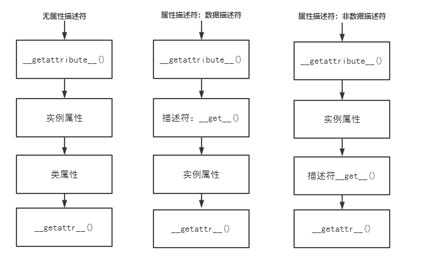

关于属性描述符请看上文>属性描述符
在梳理属性查找相关知识时，查看了很多的书籍和他人的博客，发现很多讲的过于抽象，并没有一个清晰的流程呈现。特此写下我对于此方面的理解和总结。
我将属性的查找拆分为三种情形，分别为普通属性查找、数据描述符查找，非数据描述符查找。
class MyAttr():
name = 'class_levy'
def __init__(self):
self.name = "instance_levy"
def __getattribute__(self, item):
return "This is getattribute"
def __getattr__(self, item):
return "This is getattr"
my = MyAttr()
print(my.name)
#def __getattribute__(self, item):
#return "This is getattribute" def __init__(self):
pass从上述的流程，我们可以分析出普通属性的查找过程为__getattribute__()->实例属性->类属性->getattr
class Data():
def __get__(self, instance, owner):
return "This is get"
def __set__(self, instance, value):
pass
class MyAttr():
name = Data()
def __init__(self):
self.name = "instance_levy"
def __getattribute__(self, item):
return "This is getattribute"
def __getattr__(self, item):
return "This is getattr"
my = MyAttr()
print(my.name)同上所述的分析方法，我们可以得出查找顺序__getattribute__()->描述符__get__()->实例属性->getattr
class NoneData():
def __get__(self, instance, owner):
return "This is get"
class MyAttr():
name = NoneData()
def __init__(self):
self.name = "instance_levy"
def __getattribute__(self, item):
return "This is getattribute"
def __getattr__(self, item):
return "This is getattr"
my = MyAttr()
print(my.name)同上所述的分析方法，我们可以得出查找顺序__getattribute__()->实例属性->描述符__get__()->getattr
以下为三种情况下的流程图，为了理解更容易我将三种情况分别讲述，在大部分的流程讲解中是不为三种情况分别叙述的，容易造成复杂混乱的感觉。
